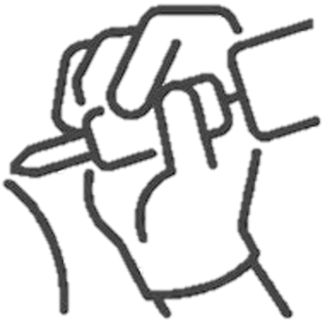

Estudio y diseños propios
Conociendo un poco mas...
Un cacho de cultura
Un tatuaje sería...

-
... una forma de modificación corporal, la cual consiste en alterar de manera temporal o permanente el color de la piel, sobre la cual se plasma un dibujo, un patrón, una figura o un texto, el cual se plasma con agujas u otros utensilios que inyectan tinta o algún otro pigmento en la dermis de una personasfdg1
- Perdurabilidad Dos diseños abstractos. Actualmente, hay tatuajes que desaparecen al poco tiempo de dibujarse y se les llama temporales. Entre los temporales, se encuentran las llamadas calcomanías, de duración muy limitada y muy popular entre los niños, de fácil borrado y que desaparecen con agua y jabón. También podemos encontrar los tatuajes de henna que desaparecen poco a poco al pasar el tiempo. Por otro lado la perdurabilidad de los tatuajes permanentes depende de la correcta aplicación de la tinta. Los tatuajes en los que la tinta ha sido aplicada en la primera capa de la epidermis son aquellos que pierden una mayor cantidad de tinta en su curado. En cambio los tatuajes en los que la tinta ha penetrado correctamente en la dermis son los que tienen una durabilidad mayor. Por otra parte, los tatuajes en los que la tinta ha sido aplicada con poca profundidad dan como resultado tatuajes decolorados o diluidos en la piel.
- Un poco sobre el origen... Etimología y terminología
Aunque la palabra tatuaje posiblemente proviene del samoano «tátau», que significa marcar o golpear dos veces (en referencia al método tradicional de aplicar los diseños o plantillas), se incorpora al español a través del francés, tatouage.1Los marineros que viajaban por el océano Pacífico encontraron a los samoanos, y quienes quedaron fascinados por sus tatuajes equivocadamente tradujeron la palabra «tatau» como tatuaje. En japonés, la palabra usada para los diseños tradicionales, o aquellos diseños que son aplicados usando métodos tradicionales, es «horimono» (literalmente grabar); «irezumi» se utiliza para referirse a cualquier tipo de tatuaje, mientras que «tattoo» se usa para diseños de origen no japonés. En español, los entusiastas del tatuaje pueden referirse a ellos como «tattoos», o usan el término castellanizado «tatu», que actualmente cuenta con entradas con las palabras 'tatuaje' y 'tatuar' en la vigésimo primera edición del Diccionario de la lengua española.
- Eliminación Los tatuajes permanecen durante toda la vida salvo en el caso de que se eliminen con técnica láser. La razón de su permanencia es que la tinta se asienta en la dermis, la capa de la piel situada bajo la epidermis. La epidermis renueva constantemente sus células, que se eliminan hacia el exterior por descamación, mientras que los tejidos de la dermis no sufren esta renovación, por lo que la tinta no se elimina. Ciertos sondeos revelan que entre el 80 % y el 90 % de las personas con tatuajes quieren eliminarlos en algún momento de su vida», informa el rotativo canadiense The Vancouver Sun.12Por su parte, un dermatólogo señala que «el incremento en la cantidad de tatuajes ha traído un aumento correspondiente en el deseo de eliminarlos». Aún con el moderno láser, el tratamiento para eliminar tatuajes puede ser doloroso, caro y consumir mucho tiempo. «Incluso borrar un tatuaje pequeño puede costar hasta 1.400 dólares», señala el periódico. Y añade: «Los más modernos, de varios colores, resultan casi imposibles de eliminar, sobre todo si son grandes». También el color es un escollo para la eliminación, al contrario de lo que popularmente se piensa, no es el negro el más difícil sino los verdes, púrpura (gamas rojas) y amarillos, dada por las mezclas de pigmentos y la difícil absorción del láser ante estos colores.
- Tatuajes veganos Hacerse un tatuaje requiere tinta, limpieza con jabones y cremas que se utilizan durante un tiempo después de hacerse el tatuaje. En la mayoría de los salones de tatuajes, durante el proceso del tatuaje algunos de los productos que se usan son de procedencia animal; de modo que hay alternativas veganas para los estrictos en esta cultura que quieran lucir un tatuaje 'vegano'
- Tatuajes ultravioletas (UV) Se realizan utilizando una tintas que brillan bajo la radiación ultravioleta, invisible al ojo humano. Estos tatuajes son invisibles bajo la luz del día o la iluminación artificial, pero se ven si se exponen a la luz negra, como la que se utiliza en discotecas y tattooes nocturnos. Los colores pueden variar del blanco al púrpura y pueden estar superpuestos a tinta de colores normal, de modo que el tatuaje también puede ser visto con iluminación normal.
- El tatuaje en la cultura El tatuaje ya no solo se considera como representación de culturas antiguas, moda pasajera o alusión a la criminalidad, sino como todo un arte.15Muestra de ello es la creación de museos especializados en el tema como El Museo del Tatuaje en México, Triangle Tattoo Museum en Estados Unidos, Museo del Tatuaje «El Templo» en España y el Tattoo Museum en Ámsterdam. Además de varias exposiciones que se han llevado a cabo en varios museos alrededor del mundo como el Museo del Muelle Branly en Francia, «Tatuadores, tatuados» o más recientemente «Arte y Tatuajes en Prisión. Muestra única», en México.[cita requerida] En distintas culturas los tatuajes se relacionan con los animales. Las culturas donde se realizaron los tatuajes fueron: en el antiguo Egipto, Bali y Java, Polinesia, Gran Bretaña, Grecia, etcétera. En 1769 los tatuajes fue redescubierto por varios exploradores polinesios. Desde entonces el tatuaje se utilizaron mucho entre los marineros, trabajadores y presos en la primera parte del siglo XIX. Actualmente el tatuaje se ha convertido en un común denominador entre los jóvenes, a veces como muestra la rebeldía, especialmente en la sociedad occidental.Los tatuajes tienen varios usos entre ellos: identificación, decoración, belleza, cosmética, religión, brujería, son ejemplos comunes. Un ejemplo de los tatuajes de identificación es el caso de la segunda guerra mundial, en la que los nazis marcaron a los judíos a campos de concentración. En la educación, los museos de las culturas del mundo ofrece un taller dedicado a las artes y cuerpo dirigido a estudiantes de secundaria, que pueden ser complementados con una visita guiada temática sobre los rituales de paso, un tema muy interesante para jóvenes y adolescentes.
Hablemos de salud
- Riesgos para la salud: Problemas menores Infecciones. Si la molestia inicial continúa después de la cicatrización, hay que consultar a un dermatólogo. Alergias: En forma de eccema de contacto, la piel se inflama, produce vesículas, exuda y pica, no desaparece hasta eliminar el causante. Hay casos de alergia a los colorantes (tatuaje) o a los metales y demás materiales utilizados:
- 2 | El sulfato rojo de mercurio_ Se utiliza como pigmento rojo en tatuajes y en pinturas artísticas. Metales Níquel, Cromo (Dicromato potásico) en tatuajes verdes, Cadmio (Amarillo) Sales de cobalto en tatuajes azules. Óxido de hierro, tonos ocres. Cuidado con los colores blanco y beige, llevan en su composición Óxido de Titanio y Óxido de Zinc. Otros pigmentos orgánicos, azoicos y derivados de plantas dan alergia en ciertas personas.
- 3 | Problemas mayores_ No se aconsejan los tatuajes y el pirsin a las personas afectas de diabetes, insuficiencia renal o enfermedades cardíacas congénitas: una eventual reacción alérgica sería peligrosa. Si el material utilizado por el tatuador no es estéril y de un solo uso, existe peligro de contraer enfermedades infecciosas. En 2017, los científicos del Laboratorio Europeo de Radiación Sincrotrón demuestran que los pigmentos que componen la tinta de los tatuajes se mueven en el cuerpo en forma de nanopartículas hasta los ganglios linfáticos, principal actor del sistema inmunitario
- 4 | Riesgo médico e infección_ Irreversible por virus hepatitis C Los tatuajes tienen una elaboración a base de múltiples pinchazos que traspasan la epidermis y la tinta se fija en la dermis. No hay que ignorar que un tatuaje es una herida y por lo tanto susceptible a adquirir infecciones incluso si se toman las debidas precauciones. La hepatitis C es una enfermedad crónica causa de cáncer de hígado y que se adquiere por múltiples formas al practicar un tatuaje, la exposición directa en sangre, instrumentos previamente contaminados por el virus y por falta de medidas higiénicas que, en general, los estudios de tatuaje autorizados legalmente suelen cumplir la normativas de los institutos de salud y poseen equipos adecuados para sesiones libres de riesgo. Algunos tipos de hepatitis suelen permanecer latentes sin mostrar sintomatología durante 20 años, pero el virus de la hepatitis C puede mostrarse a los dos meses de haber sido infectado.1hjgf
- 5 | Hay que tener_ Suficiente criterio personal para exigir a los estudios y sus artistas las medidas higiénicas que aseguren sesiones sin riesgos para la salud, ser celosos para con la higiene y evitar comportamientos de riesgo: ignorar el origen de las agujas (deben permanecer esterilizadas en bolsas individuales), ignorar que las tintas carezcan de estricto control higiénico (en algunos países los únicos recipientes autorizados y aceptados higiénicamente suelen ser monodosis), y exigir una certificación de que el artista está capacitado para el tatuaje.
- 6 | Conocimientos básicos_ Higiénico sanitarios por el cual se efectúan en las prácticas de tatuaje, micropigmentación y pirsin, el tatuador y el centro que realizan estas prácticas deben cumplir los requisitos higiénicos sanitarios básicos establecidos, higiénico sanitario para ejercer la profesión con garantías de salud e higiene, ya que los materiales y el contacto con la piel hacen de vital importancia los conocimientos a la hora de afrontarlos con calidad y seguridad.
- 7 | Conocimientos necesarios_ Sobre esterilización y desinfección: - Técnicas de asepsia, desinfección y esterilización para evitar la transmisión de microorganismos potencialmente patógenos. - Medidas de prevención y correcta aplicación, esencial para prevenir la aparición de infecciones. - Piel y mucosas: la importancia de conocer el medio que se trabaja, la piel como órgano protector y los conceptos anatómicos y de fisiología básica. El temario consta de piel y mucosas, anatomofisiología de la piel, microbiología, epidemiología, conceptos de asepsia, esterilización y desinfección, enfermedades de transmisión hemática, medidas de prevención, locales e instalaciones, utensilios y materiales de uso, residuos sanitarios, normativas y marco legal, responsabilidad civil y primeros auxilios.